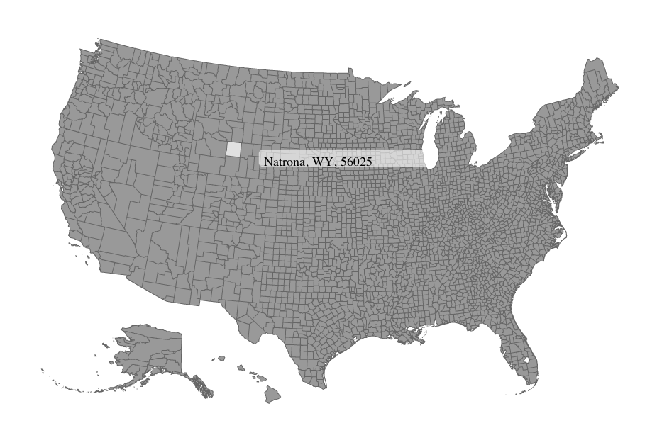

Vector Map

I did this quite awhile ago just to see if I could. Every point of the vector map was gathered by an AppleScript I wrote and the output was pasted into an xml file that was then read into a lengthy ActionScript class that produced this fully vector map. Fun stuff. Unfortunately it was so long ago that while I do have the AppleScript, I've long lost the ActionScript. So, you only get this screenshot.